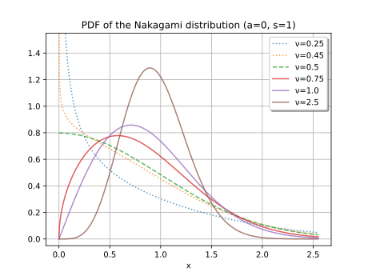

Parameters
PDF: \begin{equation} f(x, \nu, a, s) = \frac{2 \nu^{\nu}}{s\Gamma(\nu)}\left(\frac{x - a}{s}\right)^{2\nu - 1}\exp\left(-\nu\left(\frac{x - a}{s}\right)^2\right) \label{eqn:pdf} \end{equation}
Logarithm of the PDF: \begin{equation} \log f(x, \nu, a, s) = \log 2 + \nu \log \nu - \log \Gamma(\nu) - \log s + \left(2\nu - 1\right)\log\left(\frac{x - a}{s}\right) - \nu \left(\frac{x - a}{s}\right)^2 \label{eqn:logpdf} \end{equation}
CDF: \begin{equation} F(x, \nu, a, s) = \frac{\gamma\left(\nu, \nu\left(\frac{x - a}{s}\right)\right)}{\Gamma(\nu)} \label{eqn:cdf} \end{equation} where \(\gamma(u, v)\) is the lower incomplete Gamma function.
Mean: \begin{equation} E(X(\nu, a, s)) = a + s\frac{\Gamma(\nu + 1/2)}{\nu^{1/2}\Gamma(\nu)} \label{eqn:mean} \end{equation}
There are qualitative changes in the PDF at \(\nu = 1/2\). For \(0 \lt \nu \lt 1/2\), the PDF blows up at \(x = 0\). For \(\nu > 1/2\), \(f(0, \nu, a, s)\) is 0. For \(\nu = 1/2\), the distribution is the "half normal" distribution.

Likelihood function: \begin{equation} L(\textbf{x}, \nu, a, s) = \left(\frac{2 \nu^{\nu}}{s\Gamma(\nu)}\right)^N \prod_{i=1}^N \left(\frac{x_i - a}{s}\right)^{2\nu - 1}\exp\left(-\nu\left(\frac{x_i - a}{s}\right)^2\right) \label{eqn:likelihood} \end{equation}
Log-likelihood function: \begin{equation} \ell(\textbf{x}, \nu, a, s) = N\log 2 + N \nu \log \nu - N\log \Gamma(\nu) - N\log s + \left(2\nu - 1\right)\sum_{i=1}^{N}\log\left(\frac{x_i - a}{s}\right) - \nu \sum_{i=1}^{N}\left(\frac{x_i - a}{s}\right)^2 \label{eqn:loglikelihood} \end{equation}
Derivatives of the log-likelihood function: \begin{equation} \frac{\partial \ell}{\partial \nu} = N\left\{1 + \log\nu - \psi(\nu)\right\} + 2\sum_{i=1}^N\log\left(\frac{x_i - a}{s}\right) - \frac{1}{s^2}\sum_{i=1}^N (x_i - a)^2 \label{eqn:dl_dnu} \end{equation} where \(\psi(\nu)\) is the digamma function, \(\psi(\nu) = \Gamma'(\nu)/\Gamma(\nu)\). \begin{equation} \frac{\partial \ell}{\partial a} = -(2\nu - 1)\sum_{i=1}^N \frac{1}{x_i - a} + \frac{2\nu}{s^2}\sum_{i=1}^N (x_i - a) \label{eqn:dl_da} \end{equation} \begin{equation} \begin{split} \frac{\partial \ell}{\partial s} & = -\frac{2N\nu}{s} + \frac{2\nu}{s^3}\sum_{i=1}^N (x_i - a)^2 \\ & = \frac{2\nu}{s}\left(-N + \frac{1}{s^2}\sum_{i=1}^N (x_i - a)^2 \right) \end{split} \label{eqn:dl_ds} \end{equation}
Assume that the location parameter is fixed.
If the scale is not fixed, then by setting \(\frac{\partial \ell}{\partial s} = 0\) we obtain \begin{equation} s = \left(\frac{1}{N} \sum_{i=1}^N(x_i - a)^2\right)^{\frac{1}{2}} \label{eqn:s} \end{equation}
If the shape parameter \(\nu\) is not fixed, then by setting \(\frac{\partial \ell}{\partial \nu} = 0\) we obtain \begin{equation} \log\nu - \psi(\nu) = -1 + \frac{1}{N} \left(\frac{1}{s^2}\sum_{i=1}^N(x_i - a)^2 - 2\sum_{i=1}^N \log\left(\frac{x_i - a}{s}\right)\right) \label{eqn:nu_implicit} \end{equation} If the scale is also not fixed, the expression on the right can be simplified, resulting in \begin{equation} \log\nu - \psi(\nu) = - \frac{2}{N}\sum_{i=1}^N \log\left(\frac{x_i - a}{s}\right) \label{eqn:nu_implicit_scale_free} \end{equation} In either case, \(\nu\) can be found by numerically inverting \(\log\nu - \psi(\nu)\).
Suppose all three parameters are available for fitting the distribution. Then the problem is not well posed. To see this, consider \(\eqref{eqn:likelihood}\), and without loss of generality, let \(x_1\) be the minimum of the elements of \(\textbf{x}\). Let \(\nu\) be any value in the interval \(0 \lt \nu \lt 1/2\), and let \(s\) be any positive value. We can make the likelihood \(L(\textbf{x}, \nu, a, s)\) as large as we like by letting \(a\) approach \(x_1\) from below, because in that case, the \(2\nu - 1\) is negative, and the term \(((x_1 - a)/s)^{2\nu-1}\) goes to infinity while the other terms in the expression approach constants.
If the shape parameter \(\nu\) is fixed with \(\nu > 1/2\), then the problem described above is avoided. The location \(a\) is found numerically by solving \(\frac{\partial \ell}{\partial \nu} = 0\), which is \begin{equation} -(2\nu - 1)\sum_{i=1}^N \frac{1}{x_i - a} + \frac{2\nu}{s^2}\sum_{i=1}^N(x_i - a) = 0 \end{equation} If the scale is not fixed, we can use \eqref{eqn:s} to eliminate \(s^2\) and obtain \begin{equation} -(2\nu - 1)\sum_{i=1}^N \frac{1}{x_i - a} + 2\nu N\frac{\sum_{i=1}^N(x_i - a)}{\sum_{i=1}^N (x_i - a)^2} = 0 \end{equation} In either version of the implicit equation for \(a\), the numerical solver must ensure that the solution where \(a \lt \textrm{min}\{x_i\}\) is returned. (Typically there is a solution between each adjacent pair of values in the ordered set \(\{x_i\}\).)